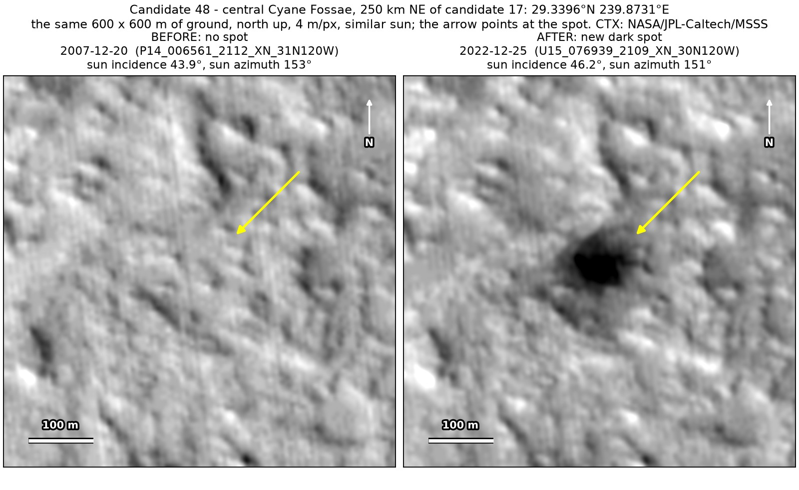
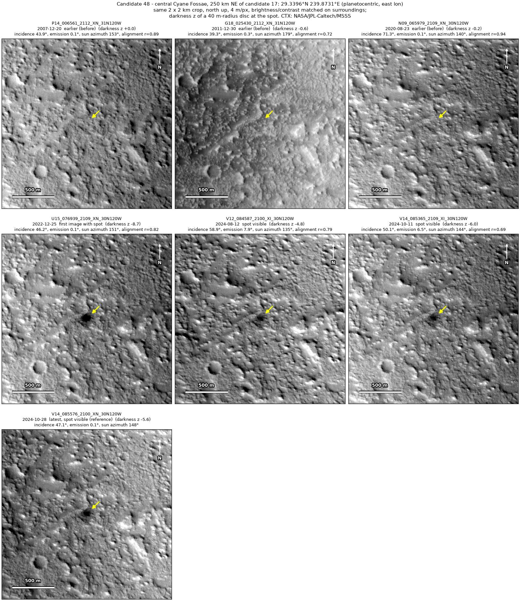
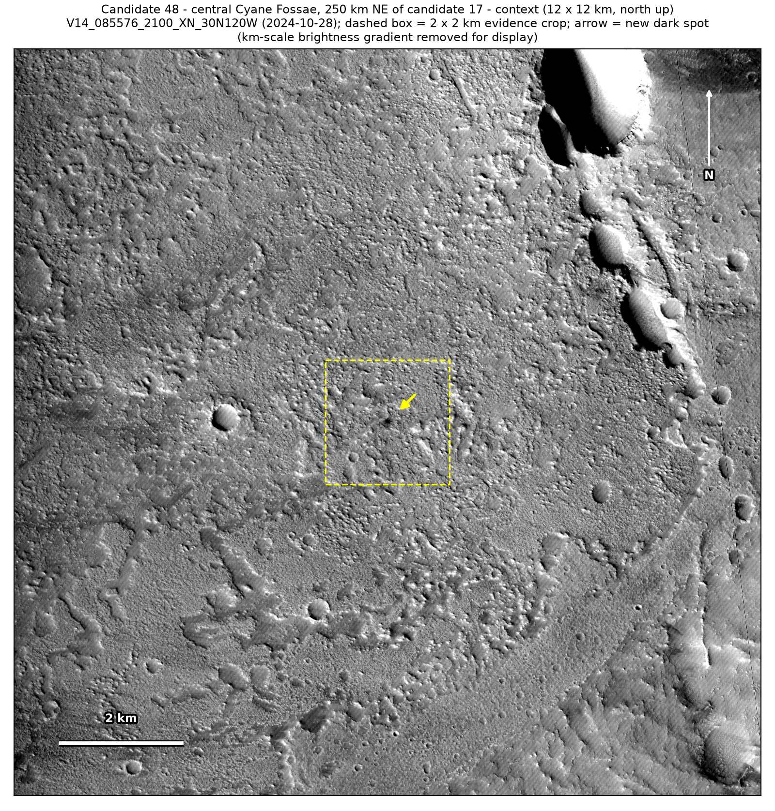
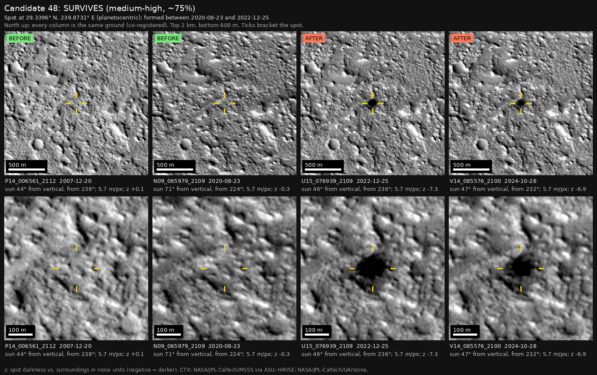

Professor of Mathematics
Paata Ivanisvili
Department of Mathematics, University of California, Irvine

← Possible new impact sites on Mars
Candidate 48: Knobby plains in central Cyane Fossae
Strong · roughly 75%

What changed. A dark spot 105 to 135 m across appeared on knobby plains in central Cyane Fossae between August 2020 and December 2022. It is still there in three images from August to October 2024, 22 months later.
Why it may be a new impact. Images from 2007 and August 2020 show nothing there, and both would have shown it; the 2007 image was taken under the same sun as the December 2022 one, so the spot is not a shadow. It is seen on four orbits. No track or ray leads to or from it: a faint line to its south-west was already there in 2020, before the spot formed. A dark spot that appears without a track and lasts for nearly two years is what a small new impact leaves.
- Location
- 29.340° N, 239.873° E (120.127° W)
- Absent
- 20 December 2007 and 23 August 2020
- Present
- 25 December 2022, 12 August 2024, 11 October 2024 and 28 October 2024
- Size
- Dark spot 105 to 135 m across
- Confidence
- Strong candidate; roughly 75% that it is a new impact.
- Caveat
- Dust is often raised in this region (one of the earlier images was taken to watch for it), and a dust devil that stalled could leave a dark spot like this one. No track leads to the spot and it has lasted 22 months, but this alternative is why the confidence is lower. It first shows in a 2022 image, so the camera teams may already have it on their unpublished lists; but it lies outside every footprint of the high-resolution HiRISE camera, and the teams normally photograph a new impact with HiRISE within months of noticing it. Like every candidate here, it is unconfirmed: see the caveat.


